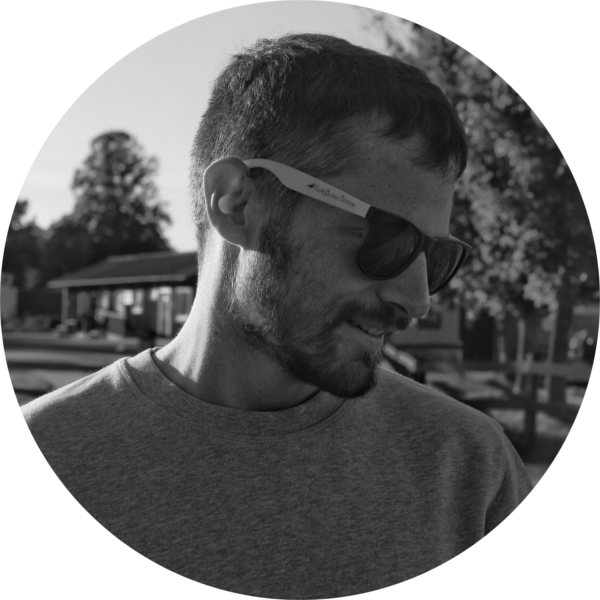

JACOPO LOVATELLO
Audio DSP Engineer
I'm Jacopo, an audio DSP engineer from Italy living and working in Sweden.
I'm currently working as Audio Software Developer at Elias Software, a Stockholm-based startup working with adaptive music and interactive audio for video games. During my previous job at Softube, I researched, designed, and implemented algorithms for audio DSP; my work there was particularly focused on circuit modeling and virtual analog.
WORK
Model 84 Polyphonic Synthesizer - Softube (2021)

Task: Circuit modeling and firmware emulation of a Roland Juno-106 from 1984.
Role: Tech Lead and DSP Developer.
Model 84 is Softube's first fully modeled polyphonic synthesizer. This required the development of new circuit modeling techniques that combined both accuracy and a limited CPU consumption. Special care has been taken in developing the original voice allocation modes, in replicating the chorus noise and in emulating the phasing artifacts characterizing the Unison mode.
Model 72 Synthesizer System - Softube (2020)

Task: Circuit modeling of a Moog Minimoog from 1972.
Role: Tech Lead and DSP Developer.
Model 72 is Softube fully modeled synthesizer. This required the development of new technique and procedures that weren't previously part of the company's portfolio. Special care has been taken in replicating the feedback around the VCF and VCA used by many to increase the saturation in the original hardware.
Weiss EQ1 - Softube (2019)
Task: SHARC Assembly porting to C++ of the DSP running on the original hardware.
Role: DSP Developer.
This project was a different challenge since no circuit modeling was needed, being the hardware completely digital. I handled the pre-study, analysis and algorithm porting of the IIR filters, linear phase algorithm and dynamic model. I was also in charge of setting up the main structure of the whole plugin.
This plugin received a nomination for the NAMM 36th TEC Awards in January 2020.
Chandler Limited Germanium Compressor - Softube (2019)
Task: Circuit modeling of a JFET compressor with discrete germanium amplifier.
Role: Tech Lead and DSP Developer.
The Germanium Compressor is a versatile JFET compressor with a characteristic discrete germanium amplifier. The original circuitry is characterized by multiple non-linear behaviors placed in multiple feedback loops, this required extreme care in the modeling process. The original mono hardware has been enhanced with stereo and mid-side, linked and un-linked processing capabilities.
This plugin received a nomination for the NAMM 36th TEC Awards in January 2020.
Buchla 296e - Softube (2019)

Task: Circuit modeling and firmware emulation of a Buchla 296e.
Role: Tech Lead and DSP Developer.
Buchla 296e is a filter bank/VCA combo with particular features that unlock spectral transfer and spectral modulation capabilities. Since the unit processes both analog and digital signals, the project required both the modeling of the analog circuitry and the emulation of the firmware running in the original hardware. Moreover, special care has been taken in modeling the AD and DA converters, in order to get the closest possible emulation.
Softube Vocoder - Softube (2018)
Task: Design of an analog inspired real-time software vocoder for UAD hardware and UA Audio Interfaces.
Role: Tech Lead and DSP Developer.
Softube Vocoder is the first project I worked on at Softube. Special care has been taken in developing an easy-to-use vocoder with built-in polyphonic synthesizer. The implementation proved to be non-trivial due to the limitations, both in memory usage and CPU performance, of the hardware the product is designed to run on.
Steerable Circular Differential Microphone Arrays - Politecnico di Milano (2018)
An efficient continuous beam steering method, applicable to differential microphones of any order.
As objective of my master thesis, I developed a novel beam steering method useful to implement up to third-order cardioids beam-patterns, with arbitrary steering direction, using circular microphone arrays.
This research has been presented at the 26th European Signal Processing Conference (EUSIPCO) in September 2018.
CV
Elias Software AB, March 2022 - present
AUDIO SOFTWARE DEVELOPER
Research, design and implement tools for adaptive music and interactive audio for video games.Softube AB, June 2020 - February 2022
PLATFORM INTEGRATIONS LEAD DEVELOPER
Manage the inter-platform integrations portfolio. Plan, design and create new modules for platforms. Prioritize and design platform adaptations of existing products/modules. Design platform specific features and customizations.Softube AB, April 2018 - February 2022
DSP ELECTRONICS DEVELOPER
Research and implement new technologies needed for modelling physical systems for product development. Perform measurements and testing on the units to be modeled. General plug-in and framework related development. Implementing and verifying A/B test setups.Politecnico di Milano, October 2015 – April 2018
M.Sc., COMPUTER SCIENCE AND ENGINEERING – SOUND AND MUSIC ENGINEERING
110/110 with honours, GPA 29.3/30Thesis: Steerable Robust Circular Differential Microphone Arrays.
Università degli Studi di Milano, September 2012 – July 2015
B.Sc., MUSIC INFORMATION SCIENCE
110/110 with honours, GPA 28.0/30Thesis: Performance Oriented Pure Data Modules for Real Time Sound Synthesis and Parameters Control.
BIO
Born 1992 in Bergamo, Italy. I live and work in Linköping, Sweden.
After graduating from Politecnico di Milano (MSc) and Università degli Studi di Milano (BSc), I moved to Sweden and started working for Softube as DSP Developer. There, I designed algorithms for sound synthesis and processing, with a focus on the modeling of analog and mixed-signal electronic circuits. I took the role of tech lead for different products and worked on projects in partnership with Weiss Engineering Ltd., Chandler Limited, Buchla USA and Universal Audio.
In early 2022, I left Softube and joined Elias Software. There I research, design and implement tools for adaptive music and interactive audio for video games.
When I’m not working, I enjoy spending time in Swedish forests, lakes, and mountains, and ride my longboard over long distances.
While studying, I started dipping my toe in electro-acoustic music; I particularly enjoy composing and performing on a modular synthesizer or with a heavily processed electric guitar.